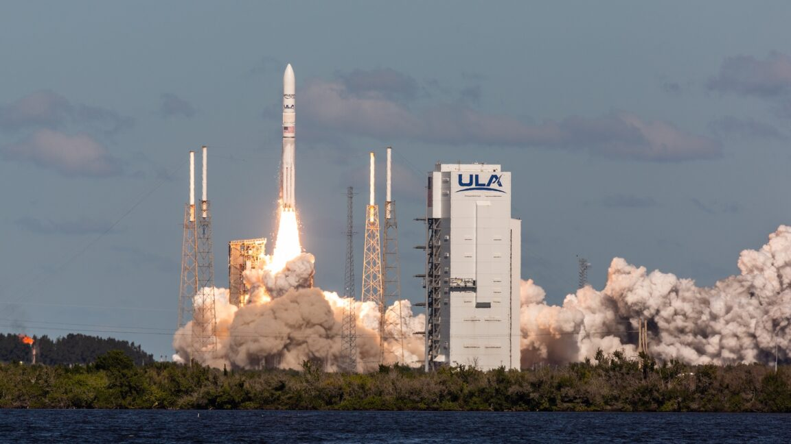

Technology · 16 Nov 2026
Vulcan rocket fails during launch, dealing major blow to SpaceX competitors

This was the first total mission failure in United Launch Alliance's 20-year history.
Multiple independent publishers are reporting on the same development: Vulcan rocket fails during launch, dealing major blow to SpaceX competitors.
The available reports place the development in the Technology category. The accounts were compared for agreement on the central event rather than simply shared names or broad topics.
One of the available reports describes the development this way: This was the first total mission failure in United Launch Alliance's 20-year history.
Readers should consult the linked source reports for additional context, updates and details that may change as the story develops.
Sources
This article was produced by the C. O. Eric AI Newsroom from the cited sources. It is published only after automated evidence and safety checks.